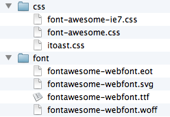

I have included 'itoast.min.js'. Just include this on your html page like this:
<script type="text/javascript" src="js/itoast.min.js"></script>jQuery or any other javascript library may be used with iToast, but is not required.
I have included 'itoast.css'. Just include this on your html page like this:
<link type="text/css" rel="stylesheet" href="css/itoast.css"/>
I have included a libary called Font Awesome . It really is awesome! This is what will allow you to have 220 possible different icons on your notifications. If you aren't already using font awesome on your project then you can install it by simply including the two font-awesome css files like this:
<link rel="stylesheet" type="text/css" href="css/font-awesome.css">important: You will also need to include the "font" directory and put it next to the "css" directory in your project. For example: 
<!--[if IE 7]><link rel="stylesheet" href="css/font-awesome-ie7.css"><![endif]-->
The most simple way to use iToast is to call the 'showNotification' function:
iToast.showNotification('Notification','This is a simple notification');
There are also different theme styles that you can use:
iToast.showNotification('Notification','This is a simple notification',{ theme: 'asphalt' });
iToast.showNotification('Notification','This is a simple notification',{ theme: 'jetblack' });
Font Awesome will allow you to put one of 220 icons on your notificaton. All you have to do is include the font awesome class name, but without the "icon-" prefix. To see a list of all 220 icon class names, see the Font Awesome project home page . So this allows us to include an icon like this:
iToast.showNotification('Notification','This is a simple notification',{icon: 'comment'});
You can also specify any color for your icon. Just specify a css color like this:
iToast.showNotification('Notification','This is a simple notification',{icon: 'comment', iconColor: 'green'});
Or you can also use a hex value of course:
iToast.showNotification('Notification','This is a simple notification',{icon: 'comment', iconColor: '#ffffff'});
You can easily create your own theme that can be accessed whenever you create a notification. Here is an example:
/** this theme is called 'foobar' and can be specified
when creating a notification because it has the class
'theme-foobar'
**/
.itoast-main-container.theme-foobar .itoast-inner-container {
background-color: #0262CC;
opacity: .8;
color: white;
text-shadow: 0px 1px 2px rgba(256,256,256,1);
}
So to create a notification that uses your new theme, all you would have to
do is include it as the theme property in your configuration like so:
iToast.showToast('Message here',{theme: 'foobar'});
iToast.showSuccess('Success','This is a simple message');
iToast.showWarn('Warning','This is a simple message');
iToast.showError('Error','This is a simple message');
iToast.showCool('Cool','This is a simple message');
iToast.showToast(message,options);
iToast.showToast(message,{
title: undefined,
icon: 'certificate',
position: 'bottom right',
pauseTime: 4000,
theme: 'default',
showCloseButton: true,
pauseOnHover: true,
returnAfterHoverTime: 1000,
type: 'general',
iconColor: 'none',
onClick: function(e) {},
});
iToast.showToast('Click me!',{
onClick: function(e) {
alert('you clicked the notification!');
}
});
I've used the following images, icons or other files as listed.
- justspamjustin